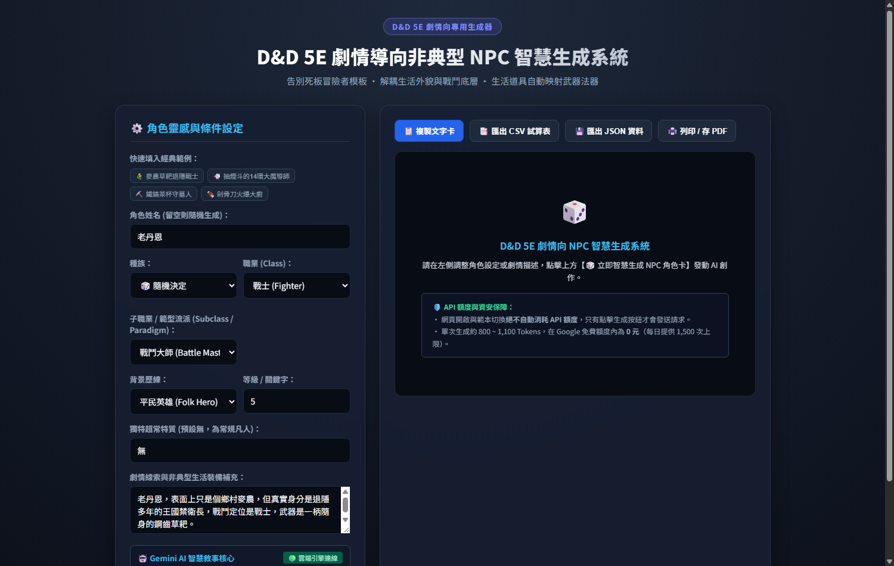
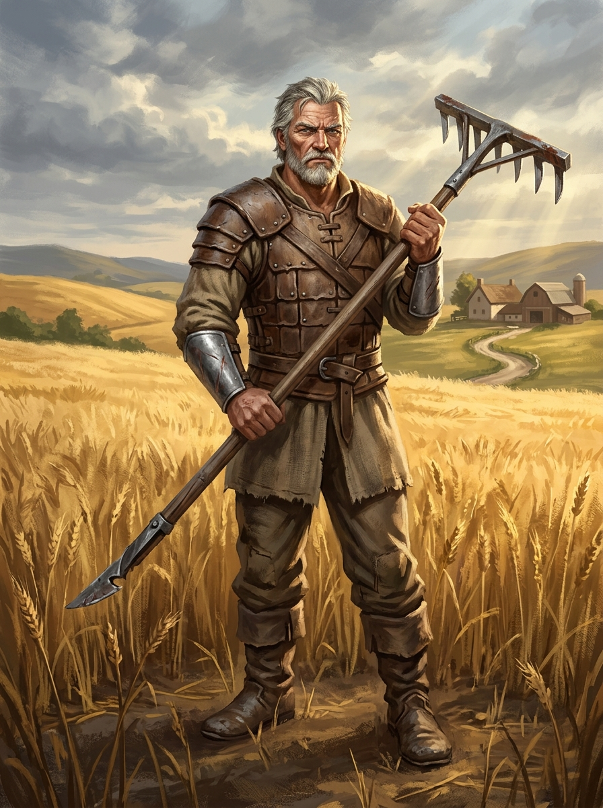
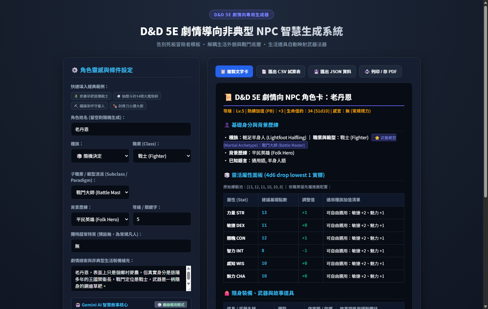
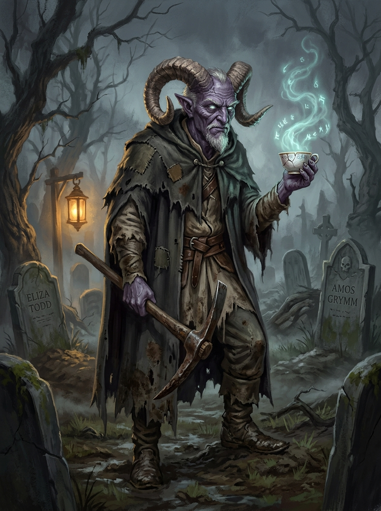
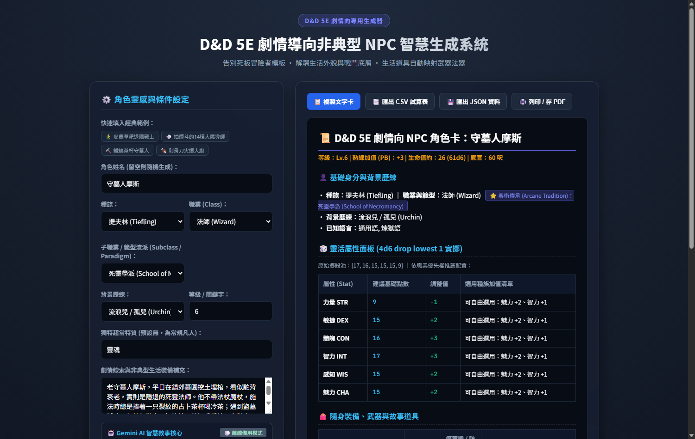
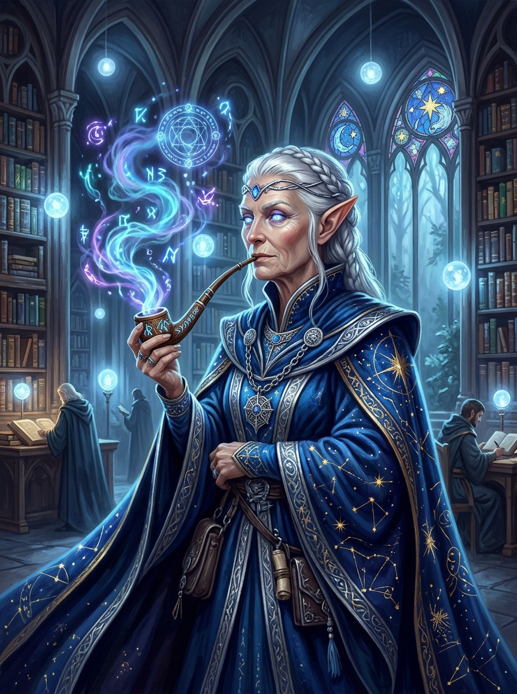
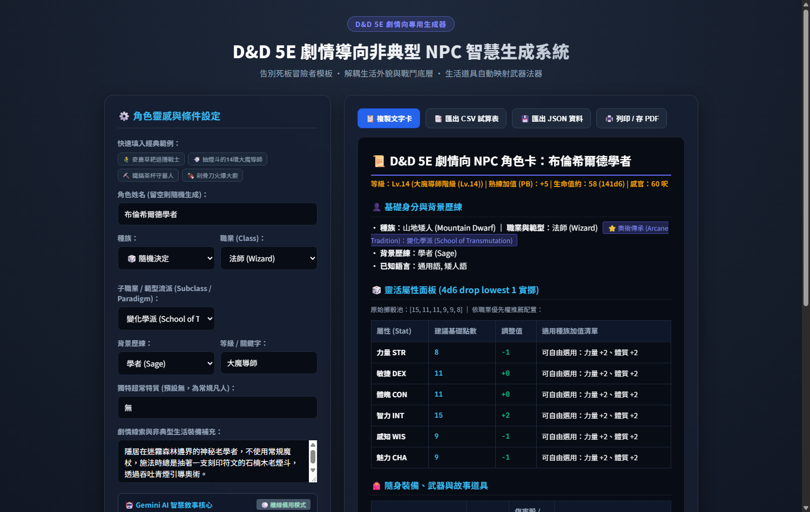

本專題是一套專為 桌上角色扮演遊戲（TRPG，以《龍與地下城》Dungeons & Dragons 5E 規則體系為核心） 量身打造的 「劇情導向非典型 NPC 智慧生成系統」。系統結合 Gemini AI 大語言模型與嚴謹的 D&D 5E 規則引擎，實現從生活細節到戰鬥流派的深度角色創作。
在 TRPG 跑團過程中，地下城主（DM / Storyteller）需要即興或備戰大量的非玩家角色（NPC）。然而，市面上現有的角色生成工具普遍存在四大瓶頸：
| 模組名稱 | 核心功能實作內容 | TRPG 跑團價值 |
|---|---|---|
| 非典型生活裝備規格化 | 將生活道具（長草耙、修枝剪、挖墳鐵鎬、符文煙斗、裂紋茶杯）自動轉譯適配為 D&D 5E 官方武器傷害骰、屬性詞綴與法器類型。 | 破除千篇一律長劍法杖，為路人角色注入市井靈魂與真實感。 |
| 全13職業 ＋ 百種範型階梯解鎖 | 完整收錄 PHB / XGE / TCE 之 13 大職業與近百種子職業範型；嚴格遵循等級階梯解鎖（戰士Lv.3、法師Lv.2、牧師Lv.1、聖騎士Lv.3）。 | 符合 D&D 5E 規則公信力，自動注入流派專屬特長與戰鬥風格。 |
| 51 種繁體中文全背景庫 | 整合《玩家手冊》與《劍灣冒險者指南》之 51 種完整官方背景（如平民英雄、公會工匠、隱士、修院學士、城市守衛、水手等）。 | 告別死板冒險者框架，涵蓋農工漁樵、三教九流市井百態。 |
| 直向快速掃視角色卡 | 垂直階梯式資訊流，依序呈現基本身分、流派徽章、4d6dl1 靈活屬性推薦、非典型武器傷害、已解鎖特長與 DM 任務伏筆。 | DM 戰鬥中 3 秒一眼掃視全局，無須在多頁試算表間來回切換。 |
| API 即時監控與 0 消耗防護 | 動態計算 Prompt 與 Completion 之 Token 消耗，精確即時顯示消耗量；冷啟動預載展示卡片，不消耗任何 API 額度。 | 額度掌控完全透明，保障使用者 API 安全與隱私。 |

本系統之目標使用者為 TRPG 地下城主（Dungeon Master / Game Master）、TRPG 劇本創作者與奇幻小說作者：
系統採用 「雙引擎架構」：以雲端 Gemini 大語言模型為主要智慧核心，輔以內建規則庫之純本地離線備用引擎，確保隨時皆可生成可用卡片：
┌─────────────────────────────────────────────────────────────┐
│ 雙重前端介面層 │
│ ┌─────────────────────────────┐ ┌────────────────────────┐ │
│ │ 網頁版 (Web Dashboard) │ │ 桌面版 GUI (Tkinter) │ │
│ │ - 雙擊即開 (免裝伺服器) │ │ - 本地單一視窗原生程式 │ │
│ │ - 響應式現代暗黑奇幻 UI │ │ - 即時屬性聯動下拉選單 │ │
│ │ - 快捷情境按鈕 (丹恩/摩斯) │ │ - 一鍵複製直向角色卡 │ │
│ └─────────────────────────────┘ └────────────────────────┘ │
└──────────────────────────────┬──────────────────────────────┘
│ (JSON 參數交換)
▼
┌─────────────────────────────────────────────────────────────┐
│ 核心雙引擎層 (dnd_npc_generator) │
│ ┌───────────────────────────┐ ┌───────────────────────┐ │
│ │ Gemini AI 智慧敘事引擎 │ │ 純本地離線備用規則引擎│ │
│ │ - 融入子職業戰鬥哲學 │ │ - 4d6dl1 實擲 (roller)│ │
│ │ - 生活武器 5E 規格化適配 │ │ - 13職業+百範型(db) │ │
│ │ - 反差小動作與 DM 任務線索│ │ - 51 種繁中全背景 (db)│ │
│ │ - 即時 Token 消耗透明化 │ │ - 語意解析 (generator)│ │
│ └───────────────────────────┘ └───────────────────────┘ │
└──────────────────────────────┬──────────────────────────────┘
│
▼
┌─────────────────────────────────────────────────────────────┐
│ 資料匯出與展示層 (exporter.py) │
│ - 📜 直向快速掃視角色卡 (含職業與範型流派徽章、武器傷害) │
│ - 📑 通用 CSV 試算表 (可在 Excel / Google Sheets 乾淨開啟) │
│ - 💾 結構化 JSON 檔案 (供 Roll20/Foundry VTT 數位跑團匯入) │
└─────────────────────────────────────────────────────────────┘
為驗證系統能否真正解決「非典型生活化特徵」、「生活武器 5E 規格化」與「等級階梯規則解鎖」，專案進行了三大關鍵極限測試：
輸入條件：角色姓名：老丹恩、職業：戰士 (Fighter)、等級：5、子職業：戰鬥大師 (Battle Master)、背景：平民英雄 (Folk Hero)、故事：「老丹恩，表面是麥農，真實身分是退隱禁衛長，戰鬥定位是戰士，武器是一柄鋼齒草耙。」
測試結果：武器精確匹配為 【鋼齒農用長草耙】，傷害骰為 1d8 (雙手 1d10) 穿刺；子職業正確識別為「武藝範型：戰鬥大師」，自動解鎖「卓越會戰」特長；4d6dl1 實擲池智慧推薦力量 16 (+3)、體魄 14 (+2)。


輸入條件：姓名：守墓人摩斯、職業：法師 (Wizard)、等級：6、子職業：死靈學派 (School of Necromancy)、背景：流浪兒 / 孤兒 (Urchin)、故事：「平日在鎮郊墓園挖墳埋棺，施法時總是捧著占卜茶杯，武器是挖墳鐵鎬。」
測試結果：子職業標註為「奧術傳承：死靈學派」，自動注入「死靈術博學者」與「嚴酷收割」特長；法器適配為 【裂紋占卜茶杯】，近戰武器適配為 【挖墳鐵鎬 (1d6 穿刺)】。


輸入條件：設定戰士等級為 1 時，範型選單自動切換為 🔒 尚未解鎖範型 (Lv.3 解鎖)；切換為等級 3 以上時，立即開放 10 大武藝範型。切換牧師時，於 Lv.1 即可自由選擇 10 大神聖領域。
進階語意測試：設定傳奇大魔導師 布倫希爾德（故事描述力量遭古代詛咒封印），系統自動將其戰鬥 CR 適度調整，並將其法器適配為 【刻印符文的石楠木老煙斗】，完美融入非典型施法動作。


/npc generate 老農戰士），使遠距語音跑團的 DM 能直接在聊天頻道中一秒召喚 NPC。